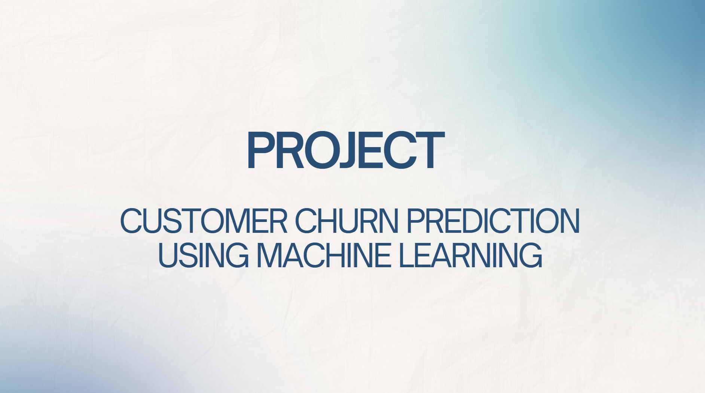
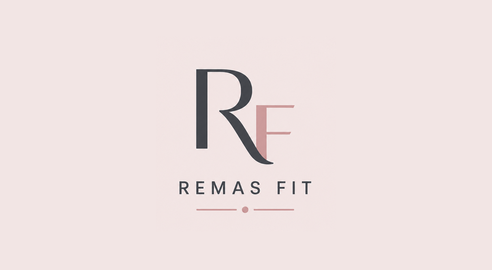
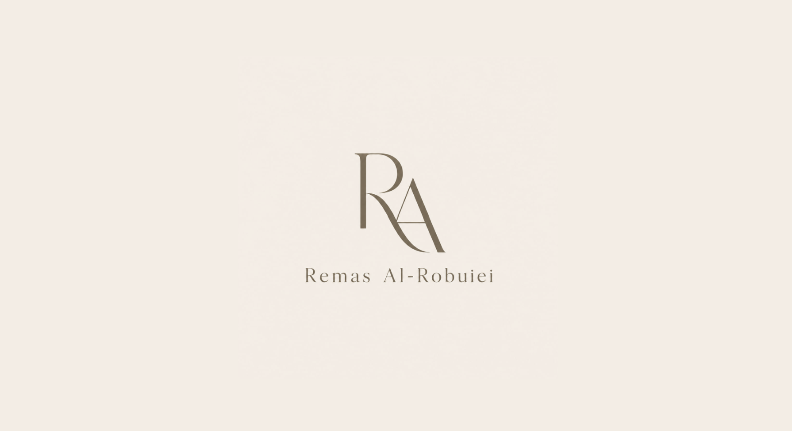
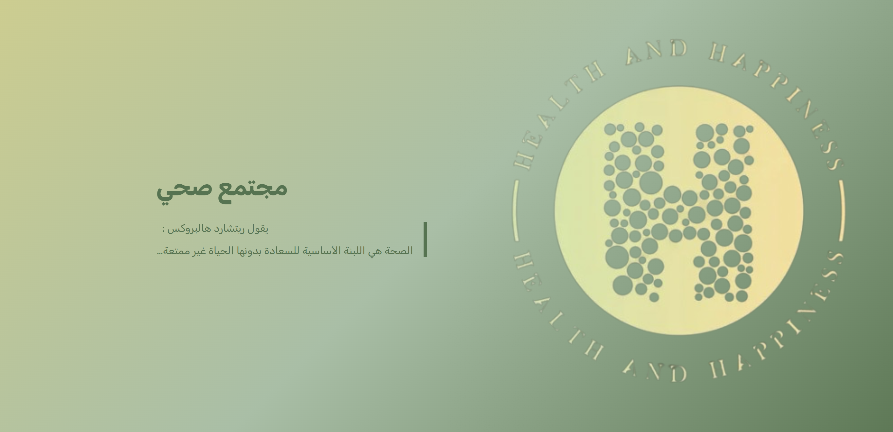

Things I've built
Click any project to explore the full details, tools, and links.
Full data pipeline across 3 datasets — profiling, cleaning, warehouse design & OLAP.

ML pipeline: cleaning, feature engineering, and 3 classification models on Kaggle.

Arabic-language fitness PWA built independently to help track workouts and goals.

Fully responsive bilingual portfolio site built from scratch and hosted on GitHub Pages.

Arabic web project helping users find trusted health stores and dietary plans based on their condition.